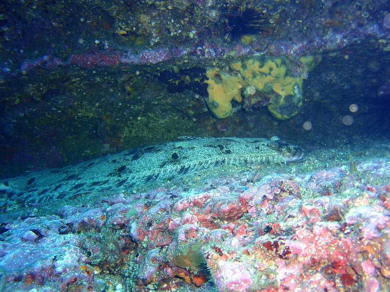

作成日: 2010-09-29 10:43:21 / last updated at: 2010-09-29 11:07:31
カテゴリ: ダイビング
カテゴリ: ダイビング
9/26に神奈川は三浦半島、城ヶ島でダイビングしてきました。本当は9/25も行く予定だったんですが、台風の影響で中止でした。
ダイビングポイントは１回目が「へいぶ根」２回目が「岩骨」。へいぶ根は透明度が悪かったのですが、岩骨の方は非常に水が澄んでいて、綺麗でした。
へいぶ根の生き物
いきなり今回のベストショット、ホソジマオトメウミウシです。：
ハナオトメウミウシに似ていますが、細いスジが走っています。

ソフトコーラル、鶏のトサカに似てるのでそのまま「トサカ」って呼んでました。：
↑トサカの「幹」あたりに、網目状の「なにか」がくっついてます。
拡大。表面が網目状で、白っぽいぶつぶつが映えている２つのお団子っぽい物体。オレンジがかったお団子と薄ピンク色のお団子、これが「シロオビコダマウサギ」で、これでも「貝」の一種だそうです。

岩骨の生き物
台風と一緒に、魚が沢山流れて来ました。ガイドさんによると、スズキ・イシダイ・メジナ・キンギョハナダイ・ムツ・ネンブツダイ等の魚群が居たそうです。自分はまだまだ見分けが付きません。
岩骨は水深20-24m前後の海底から、高さ5-6mほどの岩山がそびえています。岩山の周りをぐるりと廻っていくコースになりますが、透明度と日差しが良ければ水中ならではの雄大な景色を楽しむことができます。
岩陰に寝そべっているヒラメ：

original url: https://www.glamenv-septzen.net/view/793